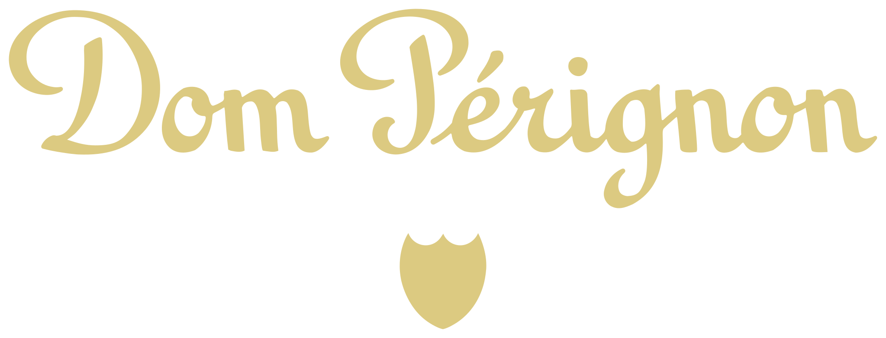

돔 페리뇽 Dom Pérignon
돔 페리뇽(Dom Pérignon)은 프랑스 모엣 샹동이 생산하는 빈티지 프레스티지 퀴베 샴페인 브랜드이다.
최종 업데이트
돔 페리뇽은 어떤 브랜드인가
돔 페리뇽은 LVMH 그룹 산하 모엣 샹동(Moët & Chandon)이 만드는 프레스티지 퀴베 샴페인이다. 17세기 오빌레르 수도원의 베네딕트회 수도사 동 피에르 페리뇽의 이름을 땄으며, 1921년을 첫 빈티지로 1936년 미국 시장에 정식 출시했다.
1943년까지는 모엣 샹동 빈티지 와인을 18세기풍 병에 옮겨 담은 형태였고, 1947 빈티지부터 처음부터 별도로 양조했다. 작황이 뛰어난 해에만 생산하는 빈티지 전용 원칙을 100년 넘게 지켜, LVMH 와인·스피리츠 부문의 최상위 샴페인으로 꼽힌다.
돔 페리뇽은 어떻게 봐야 할까
핵심은 희소성 기반의 차별화다. 매년 균일하게 생산하는 일반 샴페인과 달리, 돔 페리뇽은 셀러 마스터가 작황을 합격으로 판정한 해에만 빈티지를 선언하며, 1921년 이래 선언된 빈티지는 45개 안팎에 그친다.
경쟁자인 루이 로드레의 크리스탈 역시 빈티지 전용이지만, 크루그는 10개 빈티지·120여 종의 와인을 블렌딩하는 논빈티지 그랑 퀴베와 오크 발효로 복합미를 추구한다는 점이 갈린다. 돔 페리뇽은 스테인리스 탱크로 과실의 순도와 명료함을 살리는 노선이다.
레이디 가가 같은 아티스트, 현대미술가와의 컬래버는 럭셔리를 문화 자산으로 전환하는 전략이며, 한국에서도 명절 선물·고급 접객 시장에서 부의 상징으로 통한다.
돔 페리뇽은 어떻게 시작되고 성장했나
기원은 17세기로 거슬러 올라간다. 오빌레르 수도원의 와인 책임자였던 베네딕트회 수도사 동 피에르 페리뇽은 거품 와인을 발명한 인물은 아니나, 블렌딩과 품질 관리에서 샴페인의 기틀을 다진 선구자로 전해진다.
그의 이름과 문장(紋章)은 1927년 메르시에 가문에서 모엣 가문으로의 혼인을 계기로 모엣 샹동에 넘어갔다. 모엣 샹동은 1921 빈티지를 숙성해 1936년 뉴욕행 노르망디호에 실어 첫 프레스티지 빈티지를 선보였고, 이것이 현대 프레스티지 퀴베 시장의 출발점이 되었다.
이후 같은 술이 시간을 두고 여러 차례 정점에 도달한다는 플레니튜드(Plénitude) 개념을 정립해, 약 8년 숙성의 1차에 더해 12~15년 숙성의 P2, 더 긴 P3 단계를 체계화했다. 셀러 마스터 리샤르 조프루아에 이어 뱅상 샤프롱이 이 철학을 이어받으며 브랜드를 세계 최고가 샴페인으로 키웠다.
돔 페리뇽의 브랜드 아이덴티티는 무엇인가
가치관은 시간·인내·정점의 추구에 있다. 모든 술이 단계마다 다른 절정을 지닌다는 플레니튜드 사상이 정체성의 핵심이다.
로고는 수도사 동 페리뇽의 문장에서 따온 방패 형태로, 손글씨의 불규칙함을 살린 서체와 포도덩굴 장식, 낡은 코르크 빛 색조를 담는다. 흑색과 금색을 주조로 한 색 팔레트가 절제된 격식과 배타성을 드러낸다.
타깃은 최상위 컬렉터, 미식·예술 애호가, 기념과 접대의 순간을 찾는 고객층이다. 보이스는 절제되고 예술적이며, 과시보다 깊이와 창조의 자유를 말한다.
돔 페리뇽의 대표 제품과 서비스는 무엇인가
라인업은 작황 좋은 해에만 내는 빈티지 블랑(피노 누아·샤르도네 블렌딩, 약 8년 숙성)과 빈티지 로제로 나뉜다. 같은 빈티지를 더 오래 숙성한 P2(12~15년), 더 긴 P3가 상위 단계를 이룬다.
가격대는 매우 높아, 한국에서 신형 빈티지가 수십만 원대, P2 로제 등 희소 라인은 해외 시장에서 병당 천 달러를 넘는다. 채널은 고급 와인숍, 백화점, 면세점, 호텔·미식 레스토랑, 클럽과 한정판 에디션으로 구성된다.
돔 페리뇽은 지금 어떤 상태인가
모회사는 LVMH 그룹의 모엣 헤네시 와인·스피리츠 부문이며, 모엣 샹동이 직접 양조한다. 본사와 셀러는 프랑스 상파뉴 지방 에페르네에 있다.
최근에는 셀러 마스터 뱅상 샤프롱 체제 아래 레이디 가가와의 다년 아티스틱 컬래버('The Queendom')를 이어가며 한정판 병과 캠페인을 전개했다. 매출, 연간 생산량 등 구체 재무·물량 수치는 공식적으로 공개되지 않았다.
돔 페리뇽 연혁 — 주요 사건은 언제였나
돔 페리뇽 로고는 어떻게 변해왔나

BI/CI 아카이브보관 이미지 1자주 묻는 질문
돔 페리뇽는 어느 나라 브랜드인가요?
돔 페리뇽는 프랑스의 식음료 브랜드입니다.
돔 페리뇽는 언제 설립되었나요?
돔 페리뇽는 1921년 설립되었습니다.
돔 페리뇽의 브랜드 아이덴티티는 무엇인가요?
가치관은 시간·인내·정점의 추구에 있다.
돔 페리뇽의 대표 제품은 무엇인가요?
라인업은 작황 좋은 해에만 내는 빈티지 블랑(피노 누아·샤르도네 블렌딩, 약 8년 숙성)과 빈티지 로제로 나뉜다.
돔 페리뇽는 현재 어떤 상태인가요?
모회사는 LVMH 그룹의 모엣 헤네시 와인·스피리츠 부문이며, 모엣 샹동이 직접 양조한다.
돔 페리뇽의 공식 웹사이트는 어디인가요?
돔 페리뇽의 공식 웹사이트는 https://www.domperignon.com/ 입니다.
출처와 검증
돔 페리뇽 관련 참고: 공식 웹사이트 · 위키데이터 Q347187 · 한국어 위키백과 · 영어 위키백과. 브랜드명은 한글과 원어를 함께 표기하되 데이터에 없는 표기는 만들지 않습니다. 기원 국가·설립연도는 검수된 정의문에서 확인된 값을 우선하고, 없을 때만 공식 웹사이트 URL이 일치하는 위키데이터 개체의 값을 씁니다. 위키데이터 값은 2026-09-07 기준입니다.